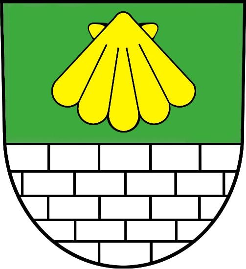
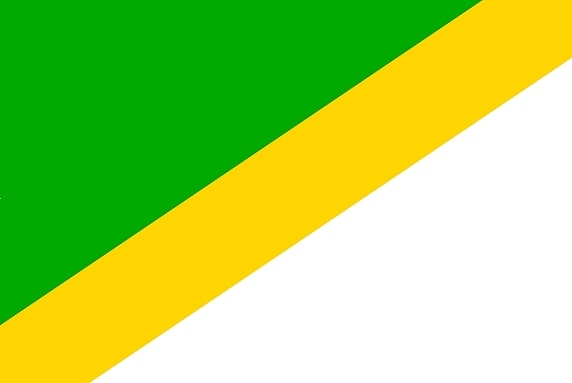

Vítejte
Právě se nacházíte na neoficiálních stránkách městské části Praha 13, ta je známá také pod názvem jihozápadní město. V této velmi rozmanité městské části se mísí historie se současností, sídlištní zastavba s rezidenční, příroda s urbanismem a ruch velkoměsta s klidem. Své místo pro životsi zde najde každý, kdo má rád městský způsob života a zároveň vyhledává energii a sílu spojenou se zelení a přírodou.
Na tomto webu naleznete několik užitečných informací o této městské části. Součástí této úvodní stránky je obecný popis a výčet několika hlavních důvodů, čím je zrovna tato část Prahy přitažlivá. Na dalších stránkách si můžete pročíst něco málo o historii této městské části a o jednotlivých územních celcích na které se tato městská část dělí. Případně pokud vás zajímá, o čem se momentálně píše nebo jaké akce se budoukonat, to se dozvíte v sekci aktualit.
Zajímá vás více než je uvedeno zde na webu? Neváhejte nás kontaktovat prostřednictvím sekce kontakty!
Proč Praha 13?
Příroda na dosah ruky
Městská zástavba přímo sousedí s Prokopským a Dalejským údolím, což jsou jedny z největších chráněných přírodních oblastí v rámci celého města Prahy. Ale také uvnitř sídlišť naleznete parky a náměstí pokryté spoustou zeleně. Největším s nich je centrální park, ve kterém se dokonce nachází dvě umělé vodní nádrže.
Dopravní dostupnost
Srdcem sídlištní zástavby projíždí žlutá linka B pražského metra, kterým se pohodlně a snadno dopravíte do centra města do několika minut. Autobusová doprava zde také není problémem, na Nových Butovících se nachází autobusové nádraží, které využívají i mimopražské linky.
Občanská vybavenost
S občanskou vybaveností se počítalo už při výstavbě sídlišť. Není tedy divu, že zde najdeme četná obchodní centra a supermarkety, polikliniky, pobočky bank a české pošty, širokou škálu restaurací a bister, obchody s oblečením a nábytkem apod. Zkrátka je tu skoro vše na dosah ruky.
Volný čas
V centrálním parku najdeme široké možnosti v nabídce sportu, ať už jde o různá workoutová hřiště, minigolfové hřiště, tenisový kurt či místní kuželkárnu. Přes zimu si obyvatelé mohou jít zabruslit na zimní stadion Bronzová. V rámci kultury zde funguje KD Mlejn, který celoročně nabízí pestrou škálu hudebních a stand-upových vystoupení či divadelních představení.
Praha 13 v číslech
59 906
Celkový počet obyvatel
38,3 let
Věkový průměr (nejnižší v Praze)
12,49 km²
Rozloha městské části